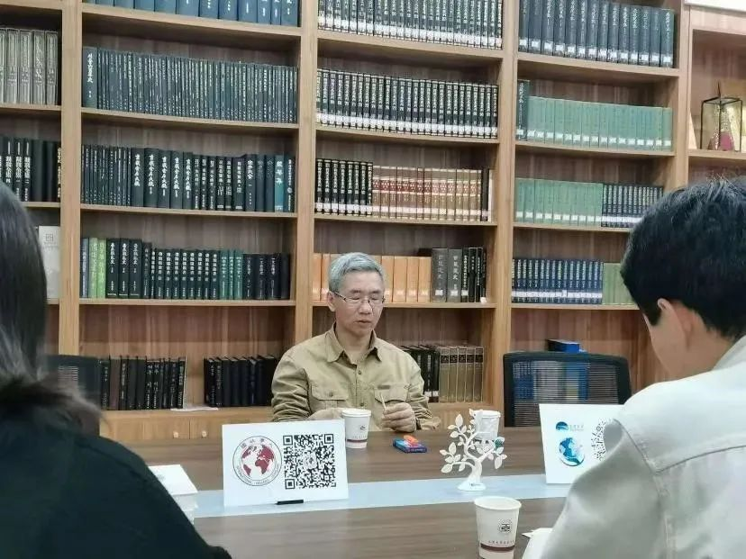
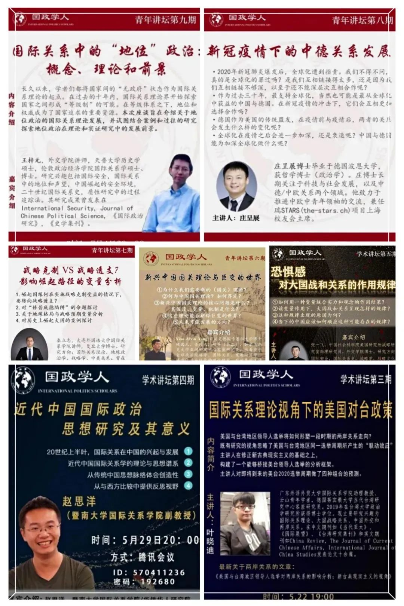
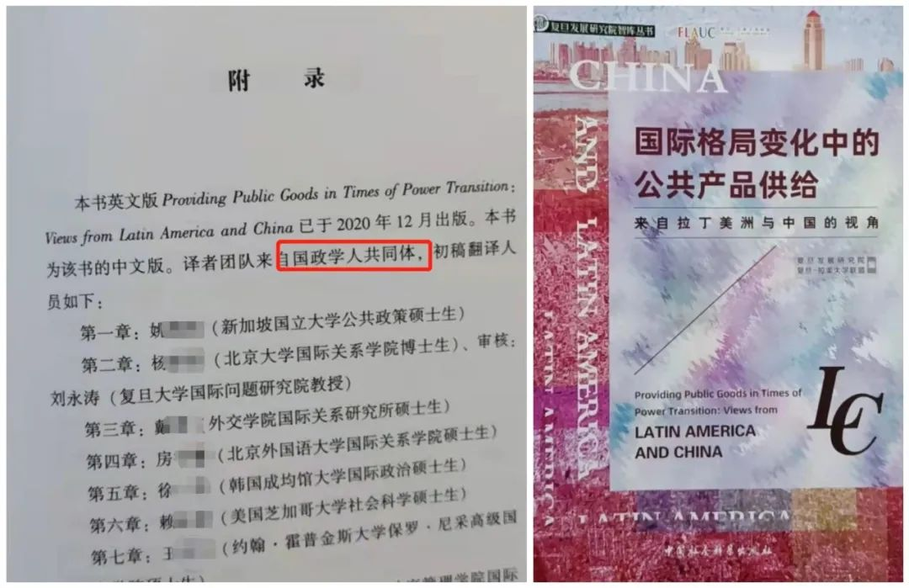
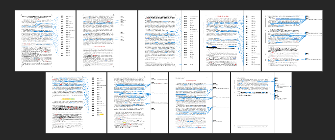
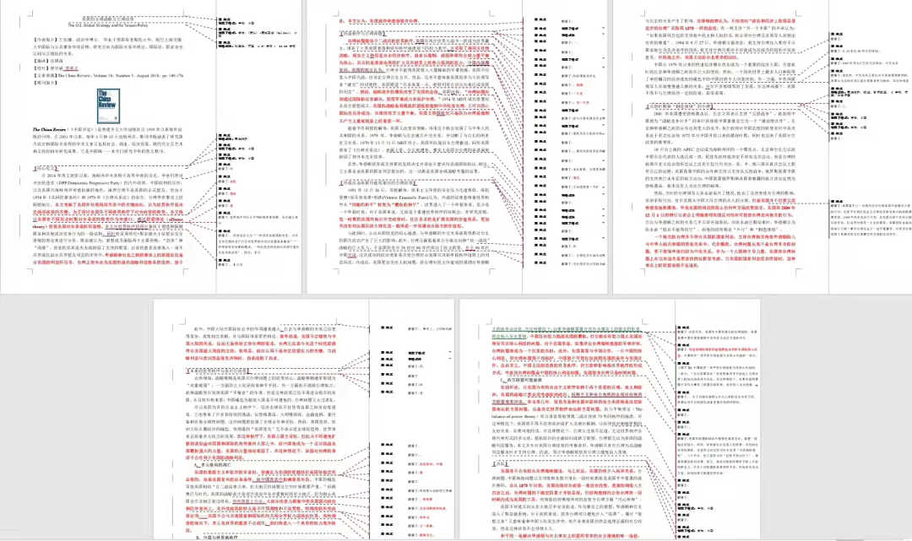
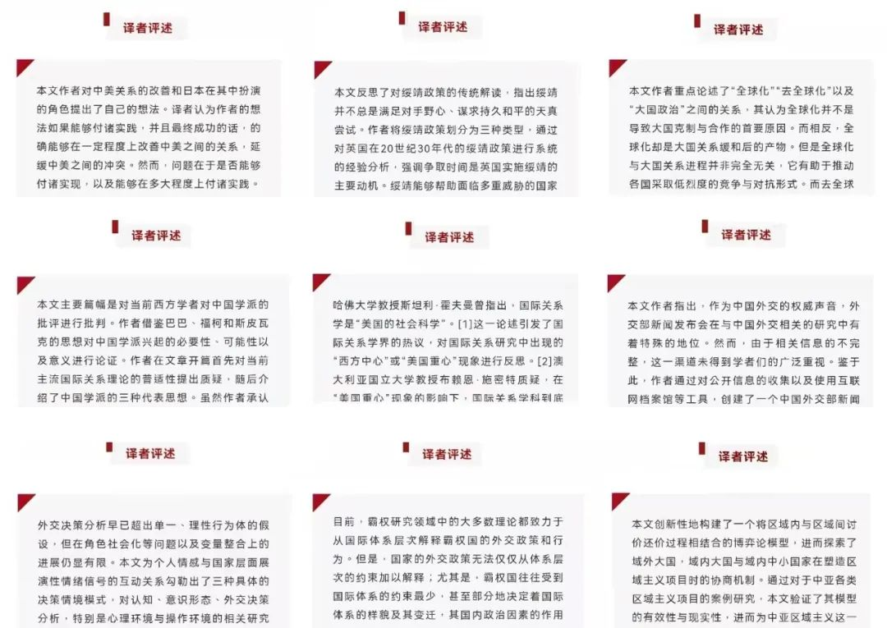
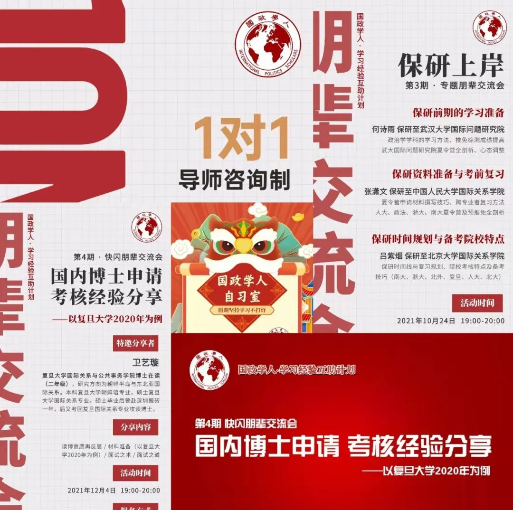
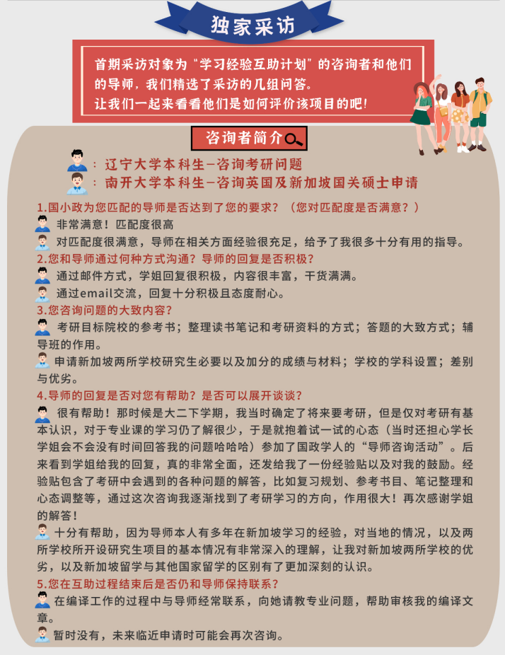

收录于合集

前言
学术编译员是国政学人最受欢迎的学习岗位之一，不少成员常年参与团队学术编译，热情不减，岗位名额紧张。在团队内部工作结构性调整之际，我们终于迎来了新一轮纳新。 本轮招贤纳士开放招募岗位为 学术编译员、学术会务专员（新设立）。
平台简介
国政学人是中国国际关系与政治学学界知名的学术公益平台，专注相关领域的知识传播与学术研究事业。国政学人共同体汇集了上百位来自海内外名校的青年学人。读者定位高水平研究者，影响受众已覆盖国内相关领域所有科研院所，并向国际拓展。目前，国政学人以高质量外文编译为特色，并逐渐成长为中国国际关系学界规模与影响力最大的编译平台，受到学界师生的广泛认可与好评。目前，国政学人已形成多平台为一体的新媒体矩阵，累计关注40余万人。此外，我们先后与知名学术杂志社、出版社、媒体、智库建立了友好联系机制，为团队成员创造了无限的信息、资源和机遇。
编译员、会务专员都做些什么？
学术编译员岗
国政学人现有栏目设置包括英文编译、新刊速递等，除固定的 英文编译 外，编译员还可以根据自身特长和喜好选择其他栏目进行加入。
主要工作内容：
英文编译： 译介国际关系领域权威期刊学术文章。
新刊速递： 系统跟踪权威学术期刊发表动态。
学术会务专员岗
在团队内部工作结构性调整之际，国政学人平台新设“学术会务专员”，专职负责访谈研讨等学术交流活动的策办。
主要工作内容：
1. 组织并参与“名家访谈”“青年访谈”活动，近距离接触学界大咖。
2. 联系专家学者并组织讲座活动。
3. 与高校合作，举办学术会议等活动。
4. 筹办线上读书会、论文工作坊等团队活动。
你是我们想找的人吗？
**
**
学术编译员岗
**
**
招募条件：
政治学一级学科下国际政治、国际关系、外交学或中外政治制度（含比较政治）专业优秀的硕博研究生，致力于从事国政国关领域学术研究，有一定专业积累，外语水平优秀（掌握其他小语种亦可加分）。
我们还希望你：
做到专业规范
有原创写作能力
有批判性思维
有学术追求和热情
能够认真负责
学术会务专员岗
招募条件：
1. 政治学、国际关系类学科在读高年级本科生、硕士生、博士生；
2. 在学院担任主要学生干部且有活动组织经历优先；
3. 有较强的执行力和行动力。
招募流程
**
**
学术编译员岗
**
**
1. 报名
请在国政学人公众号后台回复 “报名” 获取报名登记表，填写后将 报名登记表、简历、个人代表文章作品（题材不限） 以压缩包形式发送至国政学人邮箱。
邮箱：guozhengxueren@163.com 。
报名截至2022年5月25日晚22:00。
**
**
2. 笔试
报名通过初筛后，我们将以邮件形式邀请您参加笔试，编译员笔试的主要内容为专业英语测试与学术评述。
3. 入选
笔试通过后即为入选，入选成功者我们将以邮件告知，并邀请您参与后续培训工作。
学术会务专员岗
1. 报名
请在国政学人公众号后台回复 “报名” 获取报名登记表，填写后将 报名登记表、简历 以压缩包形式发送至国政学人邮箱。
邮箱：guozhengxueren@163.com 。
报名截至2022年5月25日晚22:00。
2. 入选
初筛通过后即为入选，入选成功者我们将以邮件告知，并邀请您参与后续培训工作。
温馨提示： 本轮纳新岗位不得兼任。
加入我们可以获得什么？
（一）名家近距离交流
国政学人团队曾策划主办名家学术讲坛、名家访谈（包括名家专访，学者巅峰对话等栏目）、国政学人青年讲坛等活动，邀请国政领域的名家前辈、青年学者为嘉宾进行学术讲座、学术访谈，与团队同学们进行亲切的交流。此外，国政学人不定期会受到国内外知名学者发来的文章，邀请国政学人成员编译文章，同时进行内容指导。
1. 名家学术讲坛
更多名家学术讲坛更新筹备中
2. 名家访谈（包括名家专访，学者巅峰对话等栏目）
【巅峰访谈】 唐世平教授访谈 阎学通 教授：科学理论无国界，成不了“中国学派”
【巅峰访谈】 唐世平教授专访 秦亚青 教授：从“实证主义者”到“建构主义者”
【名家访谈】 国政学人专访 王逸舟 教授：永不止步的学术长跑者
【名家专访】 国政学人专访 吴心伯 教授：“学者外交家”的政策关怀
【正在更新】 刘德斌 教授等国内知名学者专访……
我们也将邀请相关领域知名的西方学者参与访谈和对话

平台成员正在采访唐世平教授
国政学人记者与王逸舟教授合影
3. 国政学人青年讲坛

（二）学术出版与发表
1. 国政学人团队与国内知名学术出版机构合作翻译出版书籍

国政学人团队与复旦大学、中国社会科学出版社合作翻译
出版《国际格局变化中的公共产品供给》
接下来还有更多重磅的译作出版机会（署名）
2. 国政学人编译员有机会在国内重要学术期刊发表译作
（1）国政学人推荐的多篇编译文章收到中共中央编译局《当代世界与社会主义》（CSSCI）、《南洋研究译丛》等编辑部的稿约；
（2）国政学人同中国人民大学《世界政治研究》、上海国际问题研究院《国际展望》（CSSCI）、山东大学《东亚评论》等知名学术期刊建有友好的联系机制，并有机会推荐组稿。
（3）此外编译文章先后获得中国外交部亚洲司、新华社《东方瞭望周刊》、《世界社会主义研究》、中国外文局融媒体中心百万庄通讯社的青睐。
（三）个人专业素养的提升
1. 培养良好的学术精读习惯，制度化监督你的专业学习
 
2. 学术编译+评述——培养你的批判性思维

3. 优秀的专业学习氛围与贴心的学习经验互助制度
打造优秀同辈间交流平台，“保研”“申博”“海外留学”“跨学科学习”“就业”等专题朋辈交流会、一对一导师咨询、假期线上自习室等多形式内部交流活动，认识更多志同道合的小伙伴，分享个人学习与发展过程中的经验和收获、为团队成员的学业规划与升学就业提供指导和帮助。
 
4. 掌握比同龄人更多的专业信息资源
国政学人掌握强大的学界与学术信息获取渠道，包括但不限于学术前沿动态、会议讲座、学术出版、国内外升学、就业、同各院校师生沟通联系等。
5. 平台多篇文章被某985高校采用为期末试卷指定参考文献（下附真题）
题目一：参考所提供文章，围绕“国际秩序的未来”这一主题，做一项研究设计。
要求：1. 结构清晰：包含但不限于“提出问题、核心观点、思路框架、结论”等部分。2. 形式不限，重点阐释清楚研究脉络和思路。3. 不少于1500字。
题目二：参考所提供文章，以适当的角度切入，写一篇研究综述。
要求：1. 符合研究综述基本规范（不建议写成对每篇文章进行介绍的形式）。2. 不少于1500字。
文章链接：
https://mp.weixin.qq.com/s/15NwfiG1UiE3oF92eBQ6dA
https://mp.weixin.qq.com/s/UjgUQA5l9Q3x-799hfrqYA
https://mp.weixin.qq.com/s/k66tovmCVsmUy_pfCt3Iew
https://mp.weixin.qq.com/s/J-z6bdtsep0ZC- KlC79d2Q
（四）超多福利掉落
1. 合作出版社与赠书福利
国政学人与中国社会科学出版社、普林斯顿大学出版社、上海人民出版社东方编译所、商务印书馆、社会科学文献出版社等知名出版机构建立了合作关系，出版社会定期为团队提供专业最新中英文书籍。
2. 拥有更受认可的学术实习身份
国政学人紧跟国内外学界学术前沿发展动态，坚守学术公益，不走商业化路线，学术风格兼容并蓄，立场客观中立，确保较高的学术品位和内容质量，是被中国国际关系学界主流认可的公益平台，饱受学界师生好评。
3. 实习机会
表现优秀者可获得实习证明（编译量及参与时长达到要求），并有机会获得平台推荐资格，到知名单位进行联合实习。
声明： 国政学人为志愿性的学术公益组织，暂无法提供固定报酬，请在报名前悉知。招募解释权归国政学人官方平台所有。